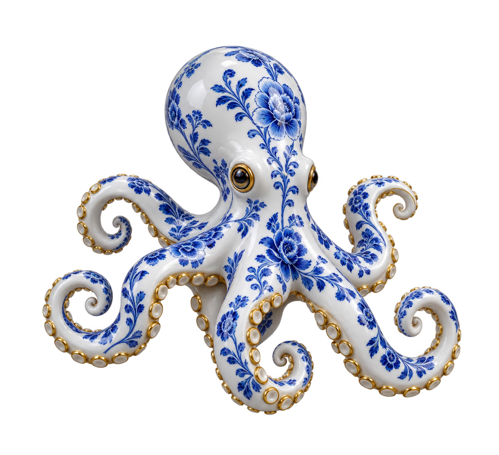

OCTOPUS

Shape the Future
Before It Arrives
Build the Vision
Before It Launches
Shape the Future Before
It Arrives
We help ambitious founders turn bold ideas into unforgettable identities with strategic thinking and creative precision.
We are a creative branding studio for ambitious startups, turning bold ideas into unforgettable identities with strategic thinking and creative precision.
We build bold, high-performance brands that move fast, adapt faster, and leave a lasting mark on their audience.
Explore the ArtWe build bold, high-performance brands that move fast, adapt faster, and leave a lasting mark on their audience.
BOLD IDEAS NEED BOLDER IDENTITIES
Every memorable brand starts with a clear point of view. We help founders find the idea at the heart of their business, then give that idea a voice, a shape, and a place in people's minds.
Before colors or logos, we ask what the brand should make someone feel. We study the audience, the category, and the ambition behind the company. That thinking becomes a story strong enough to guide every detail.
From a first impression to a lasting relationship, the work has to mean something. We make identities that feel unmistakable today and remain useful as the business grows.
The goal is simple: make the right people stop, feel, and remember. Then give them a reason to come back.
We turn strategy into a visual world with its own rhythm. Typography, color, imagery, and motion work together so each encounter feels unmistakably yours.
We build brands for curious people and ambitious founders. The process is collaborative from the first sketch: we listen closely, challenge easy answers, and follow the strongest idea wherever it leads.
The result has to be beautiful, but beauty alone is never enough. It should make a complex offer feel clear, give a new venture confidence, and help a growing team speak with one voice.
Every mark, message, and movement earns its place. Together they create an identity people can recognize without needing to see the name.
An identity does not live on a single page. It moves through websites, packaging, campaigns, spaces, and the small moments that shape how people remember a company.
We create flexible systems that hold together wherever the brand appears. A distinctive detail can become a whole language; a strong idea can travel without losing its meaning.
That is why we think beyond launch day. We make room for new products, new stories, and the unexpected turns that come with building something worth caring about.
When every piece belongs to the same world, the brand feels alive. It grows with the business and stays familiar to the people who follow it.
The future moves quickly. A brand should be ready to move with it while staying true to what made it matter in the first place.
We pair bold thinking with careful craft, shaping identities that are expressive, practical, and built to last. No borrowed personality, no details added just for decoration.
Whether the idea is just beginning or ready for its next chapter, we help turn potential into presence. We make space for the unexpected and give people something real to connect with.
Let's give your vision a form the world can recognize, remember, and carry forward.

Made to be remembered.
We shape ambitious ideas into identities people can feel, recognize and carry forward.
Not made
to blend in.
Every brand has a story worth uncovering. We give yours an unexpected shape and a lasting presence.
Have a bold
idea?
Tell us what you're building. Great identities begin with a conversation.